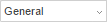
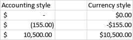
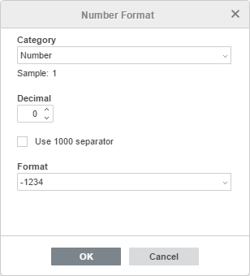

Promena formata brojeva
Primena formata brojeva
U Spreadsheet Editor-u možete lako promeniti format brojeva, tj. način na koji se brojevi prikazuju u tabeli. Da biste to uradili,
- izaberite ćeliju, opseg ćelija pomoću miša ili ceo radni list pritiskom na kombinaciju tastera Ctrl+A,
Napomena: možete izabrati i više nepovezanih ćelija ili opsega ćelija držeći pritisnut taster Ctrl dok birate ćelije/opsege pomoću miša.
- otvorite padajuću listu dugmeta Number format

koja se nalazi na kartici Home gornje trake sa alatkama ili kliknite desnim tasterom miša na izabrane ćelije i koristite opciju Number Format iz kontekstnog menija. Izaberite format broja koji želite da primenite:- General - koristi se za prikaz podataka kao običnih brojeva u najkompaktnijem obliku bez dodatnih znakova,
- Number - koristi se za prikaz brojeva sa 0-30 cifara posle decimalnog zareza, pri čemu se razdvajač hiljada dodaje između svake grupe od tri cifre pre decimalnog zareza,
- Scientific (exponential) - koristi se da bi brojevi bili kraći konverzijom u niz tipa d.dddE+ddd ili d.dddE-ddd gde je svako d cifra od 0 do 9,
- Accounting - koristi se za prikaz novčanih vrednosti sa podrazumevanim simbolom valute i dve decimale. Da biste primenili drugi simbol valute ili broj decimala, pratite uputstva ispod. Za razliku od formata Currency, format Accounting poravnava simbole valuta uz levu stranu ćelije, prikazuje nulte vrednosti kao crtice i prikazuje negativne vrednosti u zagradama.

Napomena: da biste brzo primenili format Accounting na izabrane podatke, možete kliknuti i na ikonu Accounting style na kartici Home gornje trake sa alatkama i izabrati jedan od sledećih simbola valuta: $ Dollar, € Euro, £ Pound, ₽ Rouble, ¥ Yen, kn Croatian Kuna.
- Currency - koristi se za prikaz novčanih vrednosti sa podrazumevanim simbolom valute i dve decimale. Da biste primenili drugi simbol valute ili broj decimala, pratite uputstva ispod. Za razliku od formata Accounting, format Currency postavlja simbol valute neposredno pre prve cifre i prikazuje negativne vrednosti sa negativnim znakom (-).
- Short Date - koristi se za prikaz datuma u formatu DD.MM.YYYY,
- Long Date - koristi se za prikaz datuma u formatu DD.puni naziv meseca.YYYY,
- Time - koristi se za prikaz vremena,
- Percentage - koristi se za prikaz podataka kao procenta uz znak procenta %,
Napomena: da biste brzo primenili procenat na podatke, možete koristiti i ikonu Percent style na kartici Home gornje trake sa alatkama.
- Fraction - koristi se za prikaz brojeva kao običnih razlomaka umesto decimala.
- Text - koristi se za prikaz numeričkih vrednosti kao običnog teksta sa što većom preciznošću.
- More formats - koristi se za kreiranje prilagođenog formata brojeva ili za prilagođavanje već primenjenih formata brojeva navođenjem dodatnih parametara (pogledajte opis ispod).
- Custom - koristi se za kreiranje prilagođenog formata:
- izaberite ćeliju, opseg ćelija ili ceo radni list za vrednosti koje želite da formatirate,
- izaberite opciju Custom iz menija More formats,
- unesite potrebne kodove i proverite rezultat u oblasti za pregled ili izaberite jedan od šablona i/ili ih kombinujte. Ako želite da kreirate format na osnovu postojećeg, prvo primenite postojeći format, a zatim prilagodite kodove po želji,
- kliknite OK.
- promenite broj decimalnih mesta po potrebi:
- koristite ikonu Increase decimal koja se nalazi na kartici Home gornje trake sa alatkama da biste prikazali više cifara posle decimalnog zareza,
- koristite ikonu Decrease decimal koja se nalazi na kartici Home gornje trake sa alatkama da biste prikazali manje cifara posle decimalnog zareza.
- koristite ikonu Comma style koja se nalazi na kartici Home gornje trake sa alatkama da biste prikazali brojeve sa dve decimale i hiljadama razdvojenim zarezom.
Napomena: za promenu formata brojeva možete koristiti i prečice na tastaturi.
Prilagođavanje formata brojeva
Možete prilagoditi primenjeni format brojeva na sledeći način:
- izaberite ćelije čiji format brojeva želite da prilagodite,
- otvorite padajuću listu dugmeta Number format na kartici Home gornje trake sa alatkama ili kliknite desnim tasterom miša na izabrane ćelije i koristite opciju Number Format iz kontekstnog menija,
- izaberite opciju More formats,
- u otvorenom prozoru Number Format prilagodite dostupne parametre. Opcije se razlikuju u zavisnosti od formata brojeva koji je primenjen na izabrane ćelije. Možete koristiti listu Category za promenu formata brojeva.

- za format Number, možete podesiti broj Decimal mesta, odrediti da li želite da Use 1000 separator bude uključen ili ne i izabrati jedan od dostupnih Formats za prikaz negativnih vrednosti.
- za formate Scientific i Percentage, možete podesiti broj Decimal mesta.
- za formate Accounting i Currency, možete podesiti broj Decimal mesta, izabrati jedan od dostupnih simbola valuta (Symbols) i jedan od dostupnih Formats za prikaz negativnih vrednosti.
- za format Date, možete izabrati jedan od dostupnih formata datuma: 4/15, 04/15, 4/15/06, 04/15/06, 4/15/2006, 04/15/2006, 4/15/06 0:00, 04/15/06 0:00, 4/15/06 12:00 AM, A, April 15 2006, 15-Apr, 15-Apr-06, Apr-06, April-06, A-06, 06-Apr, 15-Apr-2006, 2006-Apr-15, 06-Apr-15, 06-4-15, 06-04-15, 2006-4-15, 2006-04-15, 15/Apr, 15/Apr/06, Apr/06, April/06, A/06, 06/Apr, 15/Apr/2006, 2006/Apr/15, 06/Apr/15, 06/4/15, 06/04/15, 2006/4/15, 2006/04/15, 15 Apr, 15 Apr 06, Apr 06, April 06, A 06, 06 Apr, 15 Apr 2006, 2006 Apr 15, 06 Apr 15, 06 4 15, 06 04 15, 2006 4 15, 2006 04 15.
- za format Time, možete izabrati jedan od dostupnih formata vremena: 12:48:58 PM, 12:48, 12:48 PM, 12:48:58, 48:57.6, 36:48:58.
- za format Fraction, možete izabrati jedan od dostupnih formata: Up to one digit (1/3), Up to two digits (12/25), Up to three digits (131/135), As halves (1/2), As fourths (2/4), As eighths (4/8), As sixteenths (8/16), As tenths (5/10) , As hundredths (50/100).
- kliknite dugme OK da biste primenili izmene.